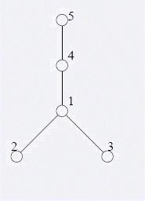

第一行是一个数n(1 < = n < = 2 50000).以下n-1行，每行两个整数a，b（1 < = a以下一行包含一个整数m
（1 < = m < = 2 50000），表示Blue Mary曾经在改造期间送过m次信。以下n+m-1行，每行有两种格式的若干信息
，表示按时间先后发生过的n+m-1次事件:若这行为 A a b(a若这行为 W a, 则表示Blue Mary曾经从比特堡送信到
村庄a。
在经济全球化浪潮的影响下,习惯于漫步在清晨的乡间小路的邮递员Blue Mary也开始骑着摩托车传递邮件了。
不过，她经常回忆起以前在乡间漫步的情景。昔日，乡下有依次编号为1..n的n个小村庄，某些村庄之间有一些双
向的土路。从每个村庄都恰好有一条路径到达村庄1（即比特堡）。并且，对于每个村庄，它到比特堡的路径恰好
只经过编号比它的编号小的村庄。另外，对于所有道路而言，它们都不在除村庄以外的其他地点相遇。在这个未开
化的地方，从来没有过高架桥和地下铁道。随着时间的推移，越来越多的土路被改造成了公路。至今，Blue Mary
还清晰地记得最后一条土路被改造为公路的情景。现在，这里已经没有土路了——所有的路都成为了公路，而昔日
的村庄已经变成了一个大都市。 Blue Mary想起了在改造期间她送信的经历。她从比特堡出发，需要去某个村庄，
并且在两次送信经历的间隔期间,有某些土路被改造成了公路.现在Blue Mary需要你的帮助：计算出每次送信她需
要走过的土路数目。（对于公路，她可以骑摩托车；而对于土路，她就只好推车了。）
第一行是一个数n(1 < = n < = 2 50000).以下n-1行，每行两个整数a，b（1 < = a以下一行包含一个整数m
（1 < = m < = 2 50000），表示Blue Mary曾经在改造期间送过m次信。以下n+m-1行，每行有两种格式的若干信息
，表示按时间先后发生过的n+m-1次事件:若这行为 A a b(a若这行为 W a, 则表示Blue Mary曾经从比特堡送信到
村庄a。
有m行，每行包含一个整数，表示对应的某次送信时经过的土路数目。
5
1 2
1 3
1 4
4 5
4
W 5
A 1 4
W 5
A 4 5
W 5
W 2
A 1 2
A 1 3
2
1
0
1